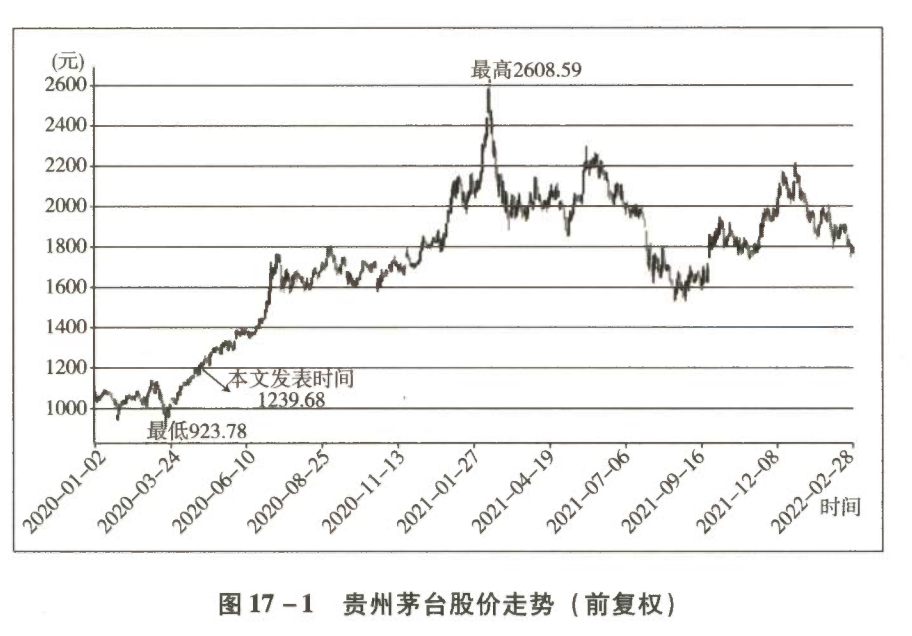

贵州茅台估值、买点及卖点计算过程演示
本文以贵州茅台为案例，复盘了茅台的估值逻辑与思考，并手把手演示了茅台估值、买点及卖点的计算过程。投资者只需要掌握小学二年级的数学，拿计算器跟着按一遍，就可以轻松掌握企业估值的技能。毫不夸张地说，只要吃透本文，投资者便可以把茅台当成捡钱的根据地，在里面捡一辈子钱。
一、不是幸存者偏差
今天茅台创历史新高，可喜可贺。今天老唐的个人身家也创了历史新高（虽然 2020 年收益率仅约 0.5%），可喜可贺。这两个"可喜可贺"其实有重大关联：老唐的全部财富里，大概有超过 1/3 来自对贵州茅台的投资。
说茅台改变了我的命运，一点儿夸张成分也没有。也正因为此，但凡在网上遇到"还不是因为押中了一个茅台""一只茅台吹一生""除了茅台之外跟狗屎一样""幸存者偏差而已"等言论，老唐一般会笑着承认：是啊是啊，你说得对。
1.1 六年零三个月的实盘数据
| 项目 | 数据 |
|---|---|
| 起点 | 2014 年 1 月公开实盘时，市值低点 1225 亿元 |
| 终点 | 本文发表时，市值 1.6 万亿元 |
| 期间现金分红 | 近 600 亿元（不含 2019 年度拟实施的约 214 亿元） |
| 股东回报 | 超过 12 倍 |
| 年化收益率 | 超过 50% |
这个过程中，老唐这种水准其实算"垃圾"的——年化连 30% 都不到。我知道的 2013 年前后一起热火朝天分析茅台的网友里，真有人全仓茅台持有至今，甚至还有全仓带融资持有至今的。这些人是幸存者偏差吗？
1.2 失败者额头上的标签
网络上动辄对别人的成功嗤之以鼻"还不是因为×××"的人真不少。坦率说，这种心态是滋生失败者的温床，很轻松就扼杀了自己可能的进步方向。
识别并远离他们，你的生活一定会更加美好。
二、站在 2013 年看茅台的估值
2.1 下注茅台几乎是必然
对茅台的投资，如果像《巴芒演义》里的案例那样拆开的话，你会发现：只要具备一些基础知识，下注于它几乎是必然的。其间的差异，顶多也就是因个人性格和风险观不同，导致的仓位大小。
为什么这么说呢？2013 年 1 月，我在雪球社区发过这样两篇帖子：
股价下跌的时候，一个现金流大过净利润、毛利率高达九成以上的生意，十五六倍市盈率照样被人当作垃圾一样丢弃。
老唐说"下狠手"的位置，股价大约 180 元左右。后来茅台毫不客气地塞钱一整年，到 2014 年 1 月的低点 118.01 元才止住。它证明了老唐从来不具备"抄底"的能力。
2.2 给茅台估值的两个关键知识点
站在 2013 年初 180 元的股价上，四年后的利润是怎么判断的呢？说破了一点儿也不难。2013 年你或许已经错过了，但我估计大家这辈子还会遇到与 2013 年一模一样的机会。届时你能否把握，就是阅读今天这篇文章的意义。
站在 2013 年，若要把握这次机会，必需的知识只有两点：
可销售量上限
茅台的可销售量上限与四年前基酒产量成正比。
需求不会消失
反腐压力下，茅台的需求不会消失，只会换一群消费者。
2.3 2013 年可见数据与推算
站在 2013—2014 年，我们能够看见的公开数据如下（其中 2013 年数据在 2014 年可见）：
表 17-1 2008—2013 年贵州茅台基酒产量与经营数据
| 年份 | 基酒产量（吨） | 商品酒销量（吨） | 营业收入（亿元） | 归母净利润（亿元） |
|---|---|---|---|---|
| 2008 | 20431 | — | — | — |
| 2009 | 23004 | — | — | — |
| 2010 | 26284 | — | — | — |
| 2011 | 30026 | — | — | — |
| 2012 | 33600 | 15200 | 265 | 133 |
| 2013 | 38452 | 15950 | 309 | 151 |
两个关键数据：
| 序号 | 推算内容 | 计算过程 | 结果 |
|---|---|---|---|
| ① | 销量占四年前基酒的比例 | 15200 ÷ 20431 × 100% | ≈ 74% |
| ② | 2016 年预计可销售茅台酒 | 33600 × 74% | 约 2.5 万吨 |
| ③ | 相比 2012 年销量的增幅 | 2.5 ÷ 1.52 × 100% − 1 | ≈ 64% |
由此任何人都可以得出的结论（若届时 2.5 万吨茅台酒可以在当前出厂价下销售出去）：
| 项目 | 计算过程 | 2016 年预计 |
|---|---|---|
| 营业收入 | 265 × 1.64 | ≈ 435 亿元 |
| 归母净利润 | 133 × 1.64 | ≈ 218 亿元 |
按照老唐估值体系，在"无风险收益率为 4%、所有利润均为真金白银、且维持当前盈利无须额外的大额资本投入"的情况下：
| 估值指标 | 计算过程 | 结果 |
|---|---|---|
| 合理估值 | 218 × (1 ÷ 4%) | 5450 亿元 |
| 理想买点 | 5450 ÷ 2 | 2725 亿元 |
| 实际市场低点 | — | 1225 亿元 |
低于 2725 亿元均为市场送钱，低得越多代表送钱越狠，但能狠到 1225 亿元也确实很让人惊喜。
2.4 茅台还有消费者吗？
真正的问题实际上落在了"届时 2.5 万吨茅台酒可以销售出去"这个假设是否大致靠谱。当时市场之所以如此恐慌，恰恰是大家怀疑这个问题——毕竟茅台的消费者一直以来以政府官员为主，而当时反腐力度非常强大。
关键争议：当时茅台的消费者以官员为主，背后的原因究竟是什么？
| 假设 | 逻辑 | 推论 |
|---|---|---|
| 前者 | 只有戴上官帽才会变得爱喝茅台 | ⚠️ 那完蛋了。反腐封杀了官员喝茅台的机会，而官员之外的其他人又不爱喝。茅台将没有消费者，生产出来的是废水，只能破产倒闭 |
| 后者 | 因为做了官导致容易得到茅台，从而满足了自己原本就有的"爱" | 做官的人作为一个生物群体，和其他人没有什么区别。只是因为他们利用手中权力，抢先获得了消费茅台的资格。反腐只是将官员群体从抢购队伍里拖出去，给其他人使用其他规则获取茅台创造了机会 |
世间资源均有分配规则：地位优先、种族优先、性别优先、年龄优先、资历优先、出价优先、先来优先，等等。
究竟是前者还是后者，这是当时的一个判断。没有这个判断，就不可能下注投资。面对"茅台就是腐败酒"的质疑时，你的认知决定了你是否能够抓住这个机会。当时老唐的帖子展示的认知是：
① 腐败分子喜欢喝茅台，究竟是因为腐败和茅台臭味相投呢，还是因为腐败分子喜欢好东西？
② 腐败分子喜欢的东西，非腐败分子会不会喜欢？两种人的人性是趋同还是趋异？
③ 严打腐败，算"虎"口夺酒吧，夺下来的酒是直接烧掉倒掉，还是会被其他非腐败分子拿走？
三个问题问通了，是否下注我觉得不难决定。 — 唐朝（2013-03-11）
在"消费不会消失，只是会换一群人消费"的判断下，2725 亿元以下作出投资或继续持股的决策，就是顺理成章的必然了。2725 亿元到 1225 亿元的下挫，就是市场先生一次次地强行塞钱。
边上始终还有人一边给市场先生加油助威，一边讽刺挖苦你笑纳馈赠实在太傻。这一点永远不变，今天和未来，当市场先生再次强行送钱的时候，你一样会遇到他们。
2.5 2014 年依葫芦画瓢
2014 年的时候，我们可以看见 2013 年的数据，照样可以依葫芦画瓢：
| 推算项 | 数据 |
|---|---|
| 2013 年基酒产量 | 38452 吨 |
| 2017 年可销售量 | 可能超过 2.8 万吨 |
| 2017 年净利润 | 可能在 264 亿元左右 |
| 届时合理估值 | 应不低于 6600 亿元 |
因潜在股权激励的事情影响，2016 年报表利润只有 167 亿元，并没有达到估计的 218 亿元。部分利润在 2017 年释放，导致 2017 年报表利润 271 亿元，超过了 264 亿元的估算。但这一切不影响投资结果——即便是 167 × 25 = 4175 亿元，相对于 180 元股价时不到 1900 亿元的市值，依然满足三年翻倍的要求。
知道了上面的思维过程，就会知道那时几乎任何价位买入茅台都是合乎逻辑的判断。这也是那些深度研究的朋友，敢于全仓乃至杠杆下注的依据。
三、站在 2020 年看茅台的估值
3.1 2020 年可见数据
表 17-2 2014—2019 年贵州茅台基酒产量与经营数据
| 年份 | 基酒产量（吨） | 商品酒销量（吨） | 营业收入（亿元） | 归母净利润（亿元） |
|---|---|---|---|---|
| 2014 | 38745 | — | — | — |
| 2015 | 32179 | — | — | — |
| 2016 | 39313 | — | — | — |
| 2017 | 42823 | — | — | — |
| 2018 | 49672 | — | — | — |
| 2019 | 49923 | 34563 | 888 | 412 |
目前能够知道的公开信息多了两点：
| 序号 | 新增信息 | 具体内容 |
|---|---|---|
| 一 | 产品供不应求 | 出厂价 969 元 与 经销商卖出去的一批价 2000 元以上，存在巨大价格差异 |
| 二 | 系列酒新增长点 | 酱香系列酒年产量 2.5 万吨、年销量 3 万吨、营收 95 亿元、净利润约 20 亿元。2021 年系列酒基酒产量不低于 5.6 万吨，预计 2021 年基酒可于 2023 年投入销售 |
基于上述数据，同样很容易估值和决策。
3.2 分业务板块的估值
公司业务一共包含三部分，按照贡献从小到大依次为财务公司、酱香系列酒、茅台酒。
3.2.1 财务公司
财务公司实际上没有什么业务，但"利润"很丰厚，去年的现金分红就有 9.12 亿元。它的主要"利润"其实就是存款利息，2019 年大约 33 亿元：
- 大部分是股份公司自有资金的利息
- 小部分为吸收集团内部其他公司存款的利差（放贷收入小到可以忽略）
由于金额不大，加上财务公司本身还有运营支出，很难精确计算。粗略按照 33 亿元之外的收支两抵计算：
| 计算项 | 计算过程 | 结果 |
|---|---|---|
| 归母净利润 | 33 × 75% × 51% | ≈ 13 亿元 |
所得税 25%（故取 75%）、少数股东持股 49%（故取 51%）。2023 年继续按照这个估算不变，即财务公司创造归母净利润 13 亿元。
3.2.2 系列酒
系列酒的存储期是两年（有部分产品存储期不明，此处一律按照两年考虑），因此 2023 年可销售量与 2021 年基酒产量相关。
| 推算步骤 | 计算过程 | 结果 |
|---|---|---|
| 2021 年基酒产量 | 已知 | 约 5.6 万吨 |
| 2023 年可销售量 | 5.6 × 80% 以内 | 约 4.3 万吨 |
| 年化销量增幅 | 由 3 万吨 → 4.3 万吨 | 9.4%（应该不难达到） |
| 2023 年营收 | 4.3 ÷ 3 × 95 | ≈ 136 亿元 |
| 2023 年净利润 | 136 × 20% 左右 | 约 27 亿元 |
以 2019 年系列酒销量 3 万吨、营收 95 亿元为基础，假设增量后费用同比增加，且出厂价格不变；净利率按 20% 左右毛估。
💡 系列酒公司（赖茅除外）是股份公司 100% 控股，没有少数股东。
3.2.3 核心部分：茅台酒
（1）增量
由于目前公司基酒存储量已经约 23 万吨，没有继续扩大存储的意义和更充足的酒库空间，可销售量至少可以按照四年前的 80%~85% 预估。
| 项目 | 数据 |
|---|---|
| 2019 年基酒产量 | 4.99 万吨 |
| 2023 年可销售量 | 4 万~4.25 万吨 |
| 相比 2019 年 3.45 万吨销量 | 量的增幅 16%~23% |
（2）提价
由于目前一批价在 2000 元以上，渠道利润过于畸形，可以预计在未来三年里提高出厂价是确定的事情，只是存在提价幅度究竟多大、以及提价在哪年实现的问题。
| 提价时点 | 预期出厂价 | 相对今天涨幅 |
|---|---|---|
| 越早提价 | 越接近 1269 元 | — |
| 越晚提价 | 越接近 1519 元 | — |
| 区间合计 | 1269~1519 元 | 约 30%~56% |
（3）2023 年茅台酒预计营收
以 2019 年茅台酒营收 758 亿元为基础：
| 情形 | 量增 | 价增 | 计算过程 | 营收 |
|---|---|---|---|---|
| 保守下限 | 16% | 30% | 758 × 130% + 758 × 16% × 130% | ≈ 1143 亿元 |
| 乐观上限 | 23% | 56% | 758 × 156% + 758 × 23% × 156% | ≈ 1454 亿元 |
（4）2023 年茅台酒预计净利润
先厘清 2019 年的基数。2019 年归母净利润 412 亿元里，包含酱香系列酒约 20 亿元及财务公司约 13 亿元：
| 计算项 | 计算过程 | 结果 |
|---|---|---|
| 茅台酒归母净利润 | 412 − 33 | 379 亿元 |
| 茅台酒净利率 | 379 ÷ 758 × 100% | 50% |
提价幅度约有 50% 会成为归母净利润。以提价 300 元为例，其分配链条为：
- 征收增值税、消费税以及城建税和教育费附加，合计约 75 元；
- 去掉小额的销管费用增量，剩下的是营业利润；
- 政府从营业利润里再征收 25% 所得税，得出公司净利润；
- 最后少数股东大约拿走 6%，剩余的就是归母净利润。
因此可以毛估提价后净利率达 51.5% 以上：
| 情形 | 计算过程 | 2023 年茅台酒净利润 |
|---|---|---|
| 保守下限 | 1143 × 51.5% | ≈ 588 亿元 |
| 乐观上限 | 1454 × 51.5% | ≈ 748 亿元 |
四、三年后合理估值及买点和卖点
4.1 2023 年预计净利润汇总
以上三项业务相加，就是 2023 年茅台公司预计的净利润：
| 业务板块 | 下限（亿元） | 上限（亿元） |
|---|---|---|
| 茅台酒 | 588 | 748 |
| 系列酒 | 27 | 27 |
| 财务公司 | 13 | 13 |
| 合计 | 628 | 788 |
628 亿~788 亿元，大约可以记作 "700 亿 ± 10%"。
4.2 合理估值与理想买点
给予 25~30 倍市盈率的两项事实依据：
无风险收益率下降
目前无风险收益率持续下降。
自由现金流大于利润
茅台公司一贯自由现金流大于利润。
| 项目 | 计算过程 | 结果 |
|---|---|---|
| 市盈率区间 | 保守取中值 | 27.5 倍 |
| 2023 年合理估值 | 27.5 × 700 ± 10% | 19000 亿元 ± 10% |
| 理想买点 | 三年后合理估值的一半 | 9500 亿元 ± 10% |
4.3 2020 年当年净利润预估
2020 年公司的计划是不增量，仍然投放约 3.45 万吨，营收预计增长 10%。由于受到新冠肺炎疫情影响，一季度实际消费量有所降低，全年预计供不应求的程度会减轻，公司压力大大减小，或许可以做到不增加投放。
不增量情况下，10% 营收增长的两条实现路径：
| 路径 | 具体做法 | 效果 |
|---|---|---|
| 一、调整产品结构 | 降低同等投放量里普茅的占比，增加小批量产品和陈年茅台的投放 | 提升出厂均价（2019 年茅台酒平均含税出厂价 1166 元/瓶） |
| 二、增加直销和商超投放量 | 依年报披露，直销出厂均价相对于批发大约有 27% 的提升 | 一方面变相提升出厂价；另一方面通过商超 1499 元零售价，展示公司在价格控制方面的努力 |
实际上，商超只是曲线利用购酒资格等手段，将差价部分体现在了别处，同时助长了黄牛炒货的歪风。
这两种情况都是提高出厂均价，所以有理由相信净利润增幅会略高于 10% 的营收增幅：
| 计算项 | 计算过程 | 结果 |
|---|---|---|
| 2020 年归母净利润 | 412 × 110% | ≈ 453 亿元，保守视为约 460 亿元 |
4.4 一年内卖点
卖点规则：三年后合理估值的 150% 和 一年内 50 倍市盈率位置，二者中较低的数值为一年内卖点。
| 计算口径 | 计算过程 | 结果 |
|---|---|---|
| 三年后合理估值的 150% | 19000 × 110% × 150% | 31350 亿元 |
| 一年内 50 倍市盈率 | 460 × 50 | 23000 亿元 ← 取较低值 |
结论：未来一年茅台市值如果高于 23000 亿元就卖出。
4.5 操作纪律总结
| 市值区间 | 操作 |
|---|---|
| 低于 9500 亿元 | 买入 |
| 9500 亿 ~ 23000 亿元 | 持股不动 |
| 高于 23000 亿元 | 卖出 |
简单吧？其实投资本就是这么简单，否则老唐不会有如此多的时间睡懒觉、追剧、看书、运动、旅游、陪领导、码字、写书、在"唐书房"聊天。
五、补充说明
本文发布后，伴随时间推移、新的财报数据出现，老唐将一年内卖点从 2.3 万亿元调高至 2.7 万亿元，并最终在 2021 年 1 月到 2 月完成卖出。后文将有记录。
